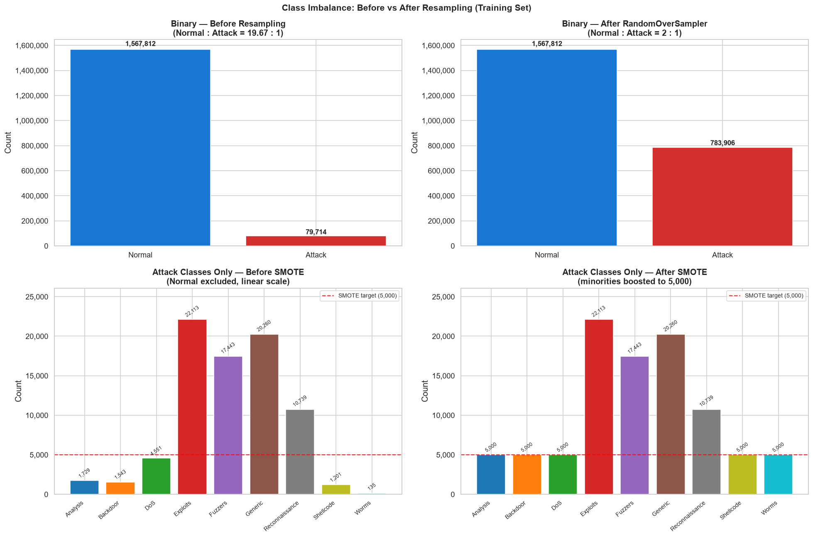

Data Preprocessing
Transforming raw UNSW-NB15 PCAP-derived CSVs into clean, model-ready feature matrices. Covers deduplication, missing value treatment, categorical encoding, feature selection, chronological splitting, and class imbalance correction.
✓ Complete📊 Preprocessing Summary
🔄 Preprocessing Pipeline
-
Duplicate Row Removal
480,632 exact duplicate rows (18.92% of raw data) removed. Duplicates arise from overlapping packet captures across the 4 files. Only fully identical rows across all columns are dropped.
-
Missing Value Treatment
ct_flw_http_mthd(53.1% null) andis_ftp_login(56.3% null) filled with 0 — semantically correct as nulls indicate the protocol is absent. Both features excluded from final 37-feature selection. -
Categorical Encoding
proto(135 values),service(13 values), andstate(16 values) encoded via ordinal integer mapping ordered by frequency. No one-hot encoding used to keep feature dimensionality low for tree models. -
Feature Selection (49 → 37)
Removed: IP address columns (
srcip,dstip) stored separately for graph construction; timestamp columns (Stime,Ltime,datetime); derived datetime columns; and 2 HTTP/FTP null-heavy columns. Final 37 features cover packet sizes, counts, loads, timings, TTLs, TCP features, and connection-tracking counters. -
Chronological Train / Val / Test Split
Records sorted by
Stime(flow start time) then split 80% / 10% / 10% chronologically to simulate temporal deployment. No shuffle — later flows are never seen at train time. This preserves real-world temporal ordering and is the reason for the large val/test distribution shift. -
Standardisation
StandardScalerfitted on training set only; applied to val and test. Applied to all 37 numeric features before feeding to MLP and GNN models. Tree-based models use raw scaled values; MLP/GNN require normalised input for stable gradient flow. -
Class Imbalance Correction (Train Only)
SMOTE applied to the binary training set to oversample minority (attack) class. For multiclass,
RandomOverSamplerused to oversample all minority attack categories. Resampling strictly applied to training data only — validation and test sets remain at their natural distributions (val 4.84% attack, test 55.06% attack).
⚖️ Class Imbalance: Before & After Resampling

RandomOverSampler brings minority categories (Worms, Shellcode, Analysis) up to a
minimum sample floor. This yields models with significantly higher recall on rare attack types
at the cost of some precision — a worthwhile trade-off for security applications where missing
an attack (false negative) is typically worse than a false alarm.
🧬 Final 37 Selected Features
| # | Feature | Type | Description |
|---|---|---|---|
| 1 | proto | Categorical | Network protocol (TCP/UDP/etc.) |
| 2 | state | Categorical | TCP state machine transition |
| 3 | service | Categorical | Application service (HTTP, DNS, FTP…) |
| 4 | dur | Numeric | Duration of the flow (seconds) |
| 5 | sbytes | Numeric | Source-to-destination bytes |
| 6 | dbytes | Numeric | Destination-to-source bytes |
| 7 | sttl | Numeric | Source TTL — OS fingerprint |
| 8 | dttl | Numeric | Destination TTL |
| 9 | sloss | Numeric | Source packet retransmission count |
| 10 | dloss | Numeric | Destination packet retransmission count |
| 11 | Sload | Numeric | Source bits per second |
| 12 | Dload | Numeric | Destination bits per second |
| 13 | Spkts | Numeric | Source-to-dest packet count |
| 14 | Dpkts | Numeric | Destination-to-source packet count |
| 15 | swin | Numeric | Source TCP window size |
| 16 | dwin | Numeric | Destination TCP window size |
| 17 | stcpb | Numeric | Source TCP base sequence number |
| 18 | dtcpb | Numeric | Destination TCP base sequence number |
| 19 | smeansz | Numeric | Mean source packet size |
| 20 | dmeansz | Numeric | Mean destination packet size |
| 21 | trans_depth | Numeric | HTTP pipeline depth |
| 22 | res_bdy_len | Numeric | HTTP response body length |
| 23 | Sjit | Numeric | Source jitter (ms) |
| 24 | Djit | Numeric | Destination jitter (ms) |
| 25 | Sintpkt | Numeric | Source mean inter-packet time |
| 26 | Dintpkt | Numeric | Destination mean inter-packet time |
| 27 | tcprtt | Numeric | TCP round-trip time (seconds) |
| 28 | synack | Numeric | SYN→ACK time delta |
| 29 | ackdat | Numeric | ACK→data time delta |
| 30 | is_sm_ips_ports | Binary | Same source/dest IP & port |
| 31 | ct_state_ttl | Numeric | State+TTL combination counter |
| 32 | ct_ftp_cmd | Numeric | FTP command count in session |
| 33 | ct_srv_src | Numeric | Connections to same service, same src in last 100 |
| 34 | ct_srv_dst | Numeric | Connections to same service, same dst in last 100 |
| 35 | ct_dst_ltm | Numeric | Connections to same dst in last 100 ms |
| 36 | ct_src_ltm | Numeric | Connections from same src in last 100 ms |
| 37 | ct_dst_src_ltm | Numeric | Connections to same dst from same src in last 100 |
✂️ Final Split Statistics
| Split | Total Flows | Normal | Attack | Attack % | After Resampling (binary) |
|---|---|---|---|---|---|
| Train | 1,647,526 | 1,567,812 | 79,714 | 4.84% | ~1.57M × 2 (balanced) |
| Val | 411,882 | 391,953 | 19,929 | 4.84% | Unchanged |
| Test | 82,332 | 37,015 | 45,317 | 55.06% | Unchanged |
💾 Saved Artifacts
| File | Description |
|---|---|
outputs/preprocessed/X_train.npy | Training features (1,647,526 × 37) |
outputs/preprocessed/X_val.npy | Validation features (411,882 × 37) |
outputs/preprocessed/X_test.npy | Test features (82,332 × 37) |
outputs/preprocessed/X_train_binary_resampled.npy | SMOTE-resampled binary training features |
outputs/preprocessed/X_train_multiclass_resampled.npy | Oversampled multiclass training features |
outputs/preprocessed/y_binary_*.npy | Binary labels (train/val/test + resampled) |
outputs/preprocessed/y_multiclass_*.npy | 10-class labels (train/val/test + resampled) |
outputs/preprocessed/feature_names.json | Ordered list of 37 feature names |
outputs/preprocessed/node_features.csv | Per-IP node feature matrix for graph construction |
outputs/preprocessed/ip_to_node.json | IP address → node index mapping |
outputs/preprocessed/srcip_train.npy / dstip_train.npy | Source/dest IP arrays for graph edge construction |
🔑 Phase 2 — Key Findings
- 18.92% of rows were exact duplicates — likely from overlapping PCAP capture boundaries between files.
- Chronological splitting deliberately creates distribution shift: val 4.84% vs test 55.06% attack ratio. This simulates temporal deployment and is intentional.
- SMOTE on train only — never applied to val/test to preserve their real-world distributions for honest evaluation.
- StandardScaler fit on train only — prevents data leakage from val/test statistics influencing normalisation.
- IP columns stored separately as node index arrays (
srcip_train.npy,dstip_train.npy) for direct use in graph construction without polluting the feature matrix.